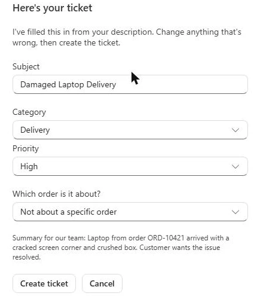
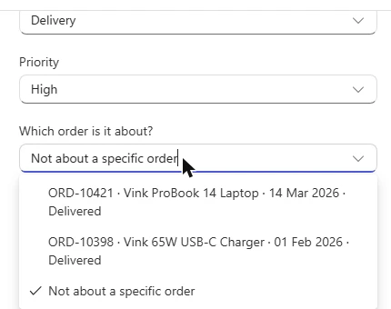
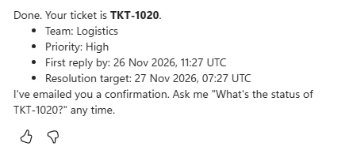
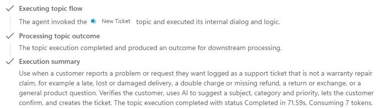

- Project deep dive
- Vink Customer Care Agent · Part 6 of 11
6 · AI triage, the review card and duplicate checks
Where this page fits
Highlighted boxes are what this page explains. The chain runs left to right, top row then bottom row.
Why AI triage plus a human check
New Ticket, after verification
Parsing AI output safely
A prompt returns text. Models sometimes wrap JSON in ```json fences or add line breaks, so the topic cleans it first, then reads each field with a fallback:
Topic.TriageText = Substitute(Substitute(Substitute(Topic.TriageResult.text,
"```json", ""), "```", ""), Char(10), " ")
Topic.Subject = IfError(Text(ParseJSON(Topic.TriageText).subject), Left(Topic.Description, 60))
Topic.Category = IfError(Text(ParseJSON(Topic.TriageText).category), "General")
Topic.Priority = IfError(Text(ParseJSON(Topic.TriageText).priority), "Medium")
Topic.Summary = IfError(Text(ParseJSON(Topic.TriageText).summary), Topic.Description)What happens if the AI misbehaves
| Field | Good output | If parsing fails |
|---|---|---|
| Subject | Damaged Laptop Delivery | First 60 characters of the description |
| Category | Delivery | General |
| Priority | High | Medium |
| Summary | Laptop from order ORD-10421 arrived with a cracked screen corner… | The description itself |
The ticket can always be created, even if the AI step returns something unexpected. See Clean JSON from AI prompts.
The review card


Choices are built in the flow as id~label|id~label text and split in the card with ForAll(Split(…)). Simple text crosses the flow-to-topic boundary reliably.
Inside Create Ticket
Create Ticket for TKT-1020
| Step | Rule | Result |
|---|---|---|
| Category | Must be one of Repair, Delivery, Billing, Returns, General | Delivery |
| Team | Repair/Returns → Repairs · Billing → Billing · else Logistics | Logistics |
| Priority | VIP customers: Low/Medium become High | High (not VIP, kept) |
| SLA | High: reply in 4 h, resolve in 24 h | 11:27 / 07:27 next day (UTC) |
| Order | ORD-10421 must belong to this customer | linked |
| Duplicate? | Open ticket, same customer and category? | no |
| Create | Ticket row with source Agent chat | TKT-1020 |
@json(if(equals(outputs('Priority'),'Low'), '{"v":949870000,"r":24,"s":120}',
if(equals(outputs('Priority'),'Medium'), '{"v":949870001,"r":8,"s":72}',
if(equals(outputs('Priority'),'High'), '{"v":949870002,"r":4,"s":24}',
'{"v":949870003,"r":1,"s":8}'))))One expression turns the priority into the stored choice value (v), reply hours (r) and resolve hours (s). json() turns the text into an object, so later steps read outputs('SLA')?['r'].
The duplicate check
_vin_customer_value eq <contact id>
and vin_category eq <category value>
and vin_ticketstatus ne 949870005 (Closed)
and vin_ticketstatus ne 949870009 (Resolved)When a duplicate is found
result = Duplicate and the existing ticket numberForceNew = yesAlex already had an open Billing ticket, but this one is Delivery, so it was created. See Upserts and duplicate checks.


Common mistakes
- Trusting AI output without parsing fallbacks.
- Creating the ticket without a confirmation step.
- Showing every order in the system in a dropdown.
- No duplicate check: one problem, five tickets.